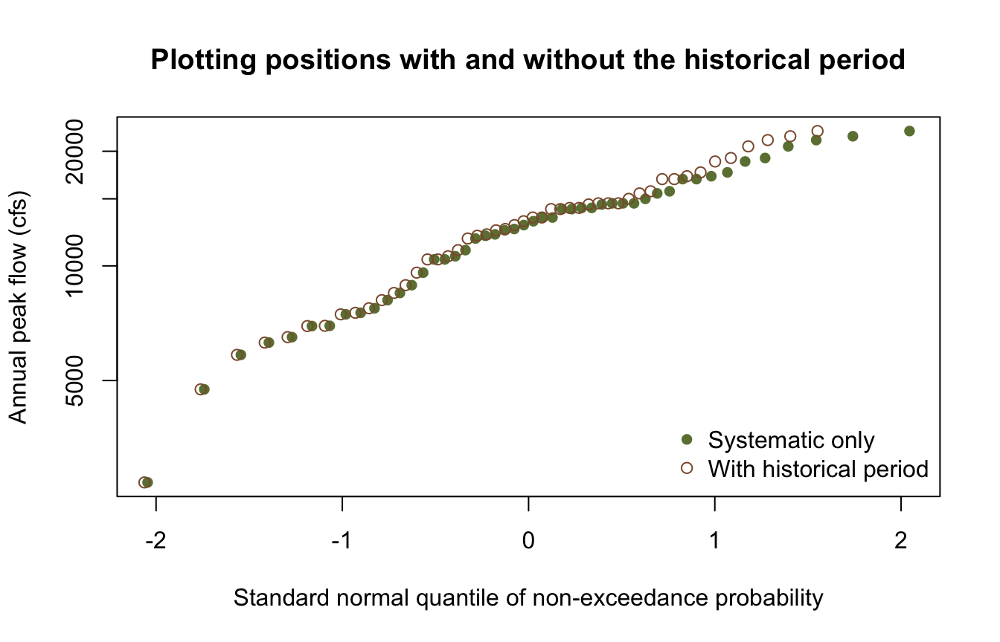

library(corehydror)23. Censored flood frequency
Bulletin 17C exists because a gauge record is rarely the whole story. A community remembers the 1927 flood; a high-water mark on a courthouse wall bounds it; nobody recorded the ordinary years in between, but everyone agrees nothing came close to the top of the levee. Guidelines for Determining Flood Flow Frequency (Bulletin 17C, England et al. 2019) calls these historical and paleoflood observations, and fitting them alongside the systematic record is the single largest improvement you can make to a flood-frequency estimate.
This example shows how to express that information with analysis_data() and hand it to an analysis through a model. It has no upstream counterpart: the USACE-RMC Numerics-Python-Examples repository has no censored-data example.
What you’ll learn
- Record historical floods known only within a range, and perception thresholds covering years with no gauge.
- See how censored observations reweight the plotting positions of the systematic record.
- Fit Bulletin 17C with and without that information, and compare the design flows.
Setup
The systematic record
Forty-eight years of annual peak flows in cubic feet per second, the same gauge record used in example 21.
peak_flows <- c(
6290, 2700, 13100, 16900, 14600, 9600, 7740, 8490, 8130, 12000,
17200, 15000, 12400, 6960, 6500, 5840, 10400, 18800, 21400, 22600,
14200, 11000, 12800, 15700, 4740, 6950, 11800, 12100, 20600, 14600,
14600, 8900, 10600, 14200, 14100, 14100, 12500, 7530, 13400, 17600,
13400, 19200, 16900, 15500, 14500, 21900, 10400, 7460
)
n <- length(peak_flows)
cat(sprintf("n = %d, max = %s cfs\n", n, format(max(peak_flows), big.mark = ",")))n = 48, max = 22,600 cfsWhat we know beyond the gauge
Two large floods predate the gauge. Neither was measured, but both left evidence that brackets them: the first somewhere between 30,000 and 38,000 cfs, the second between 26,000 and 32,000. That is interval data, an observation known only to lie in a range.
The same historical work established that over the fifty years before the gauge was installed, exactly those two floods exceeded 25,000 cfs. That is a perception threshold: a statement about the years you did not observe, and the reason those two floods can be used at all. Without it they are just two large numbers with no record length to weigh them against.
Indexes are 0-based positions in the record. The systematic record occupies 0 to 47, so the historical period sits at 48 onward.
historical <- data.frame(
index = c(n, n + 1),
lower = c(30000, 26000),
value = c(34000, 29000),
upper = c(38000, 32000)
)
perception <- data.frame(
start_index = n,
end_index = n + 49,
value = 25000,
number_above = 2
)
flood_data <- analysis_data(
exact = peak_flows,
interval = historical,
threshold = perception
)
flood_data<corehydro_data> 48 exact, 2 interval, 1 thresholdThe frame now describes 98 years, not 48:
summary_censored <- analysis_data_summary(flood_data)
summary_plain <- analysis_data_summary(analysis_data(peak_flows))
cat(sprintf(
"record length: %d years systematic -> %d years with the historical period\n",
summary_plain$total_record_length, summary_censored$total_record_length
))record length: 48 years systematic -> 98 years with the historical periodCensoring reweights the systematic record
Plotting positions are where each observation lands on a probability plot. With censored data they are the Hirsch-Stedinger positions, which account for the years you did not observe. Adding a fifty-year historical period does not change the observations, but it does change what each one represents.
shift <- data.frame(
flow = summary_plain$value,
systematic_only = summary_plain$plotting_position,
with_historical = summary_censored$plotting_position
)
shift <- shift[order(-shift$flow), ]
head(shift, 5) flow systematic_only with_historical
20 22600 0.02040816 0.06039150
46 21900 0.04081633 0.07996668
19 21400 0.06122449 0.09954186
29 20600 0.08163265 0.11911703
42 19200 0.10204082 0.13869221These are exceedance probabilities. With 48 years and nothing else, the largest gauged peak is the record maximum: a 1-in-49 event. Once the two historical floods are on the record it is only the third largest in 98 years, and its exceedance probability roughly triples, from 2% to 6%. Censoring corrects an over-optimistic ranking of the largest thing you happened to measure – which is precisely the bias historical information exists to remove.
# Plotted against the non-exceedance quantile, so rarer events sit to the right.
plot(qnorm(1 - summary_plain$plotting_position), summary_plain$value,
log = "y", pch = 16, col = "#6b7f3f",
xlab = "Standard normal quantile of non-exceedance probability",
ylab = "Annual peak flow (cfs)",
main = "Plotting positions with and without the historical period"
)
points(qnorm(1 - summary_censored$plotting_position), summary_censored$value,
pch = 1, col = "#8c5a3b"
)
legend("bottomright",
legend = c("Systematic only", "With historical period"),
col = c("#6b7f3f", "#8c5a3b"), pch = c(16, 1), bty = "n"
)
Fit Bulletin 17C both ways
bulletin17c_analysis() takes a plain vector for the systematic-only fit. For the censored fit, wrap the frame in a model and pass that instead. Everything else is unchanged.
fit_plain <- bulletin17c_analysis(peak_flows, output_length = 2000, seed = 20250811)
fit_censored <- bulletin17c_analysis(
model_bulletin17c(flood_data),
output_length = 2000, seed = 20250811
)
params <- rbind(
`Systematic only` = fit_plain$parameters,
`With historical` = fit_censored$parameters
)
colnames(params) <- c("mean (log10)", "sd (log10)", "skew")
round(params, 4) mean (log10) sd (log10) skew
Systematic only 4.0674 0.1888 -1.0103
With historical 4.0862 0.2032 -0.6863The skew moves from -1.01 to -0.69. A strongly negative skew is the log-Pearson III saying the upper tail is bounded; the two historical floods are direct evidence against that, and the fit responds.
Design flows
aeps <- c(0.5, 0.1, 0.02, 0.01)
idx <- match(aeps, fit_plain$exceedance_probabilities)
design <- data.frame(
`Return period` = paste0("1 in ", round(1 / aeps)),
`AEP` = aeps,
`Systematic only` = round(10^fit_plain$point_estimates[idx]),
`With historical` = round(10^fit_censored$point_estimates[idx]),
check.names = FALSE
)
design$Change <- sprintf(
"%+.0f%%", 100 * (design$`With historical` / design$`Systematic only` - 1)
)
design Return period AEP Systematic only With historical Change
1 1 in 2 0.50 12550 12862 +2%
2 1 in 10 0.10 19048 21240 +12%
3 1 in 50 0.02 22279 26653 +20%
4 1 in 100 0.01 23219 28527 +23%The 1-in-100 design flow rises by roughly a quarter. The confidence bands widen too, which is the honest consequence of the interval observations: they add information about the tail, and they add uncertainty about their own magnitude.
bands <- data.frame(
`AEP` = aeps,
`Lower (systematic)` = round(fit_plain$lower_ci[idx]),
`Upper (systematic)` = round(fit_plain$upper_ci[idx]),
`Lower (historical)` = round(fit_censored$lower_ci[idx]),
`Upper (historical)` = round(fit_censored$upper_ci[idx]),
check.names = FALSE
)
bands AEP Lower (systematic) Upper (systematic) Lower (historical)
1 0.50 11098 14215 12050
2 0.10 17418 21357 18431
3 0.02 17728 26592 19976
4 0.01 17728 28969 19976
Upper (historical)
1 17564
2 24119
3 31620
4 35343Low outliers
Bulletin 17C also censors from below. Small annual peaks carry little information about flood risk but drag a log-space fit badly; the Multiple Grubbs-Beck test identifies them so they can be treated as left-censored rather than dropped or trusted.
cat(sprintf("MGBT flags %d of %d systematic peaks as low outliers\n",
mgbt_test(peak_flows), n))MGBT flags 13 of 48 systematic peaks as low outliersSet mgbt_low_outliers = TRUE on the frame to apply it, or low_outlier_threshold to censor below a value you choose. This record is broad enough that the test flags a sizeable fraction, so this example leaves the low tail alone and censors only from above; on a record with a few genuine near-zero years, enabling it is standard practice.
A Bayesian fit over the same frame
Nothing about the frame is specific to Bulletin 17C. Any analysis takes a model, so the same censored data goes straight into a Bayesian MCMC fit.
bayes <- univariate_analysis(
model_univariate("LogPearsonTypeIII", flood_data),
sampler = "DEMCzs", iterations = 400, output_length = 2000,
seed = 20250811, thinning_interval = 1
)
cat(sprintf("posterior mode: %s\n", paste(round(bayes$parameters, 4), collapse = ", ")))posterior mode: 4.0824, 0.2047, -0.3914cat(sprintf("AIC %.2f | BIC %.2f | DIC %.2f\n", bayes$aic, bayes$bic, bayes$dic))AIC 996.90 | BIC 1004.65 | DIC 989.24Reproduction check
# The pipeline is deterministic (the Bulletin 17C fit is generalized method of moments;
# the Bayesian fit is seeded), so these literals are what this port computes and what
# the Python notebook asserts -- which is what proves the cross-language identity. The
# comparisons carry a 1e-15 relative tolerance only because R's decimal parser can land
# one ulp away from the written literal; the fixture suite is what enforces
# bit-exactness.
near <- \(x, literal) abs(x / literal - 1) < 1e-15
stopifnot(
# The frame is assembled as described.
summary_plain$total_record_length == 48,
summary_censored$total_record_length == 98,
summary_censored$exact_count == 48,
summary_censored$interval_count == 2,
summary_censored$threshold_count == 1,
# Censoring reweights the systematic record.
near(max(summary_plain$plotting_position), 0.97959183673469385),
near(max(summary_censored$plotting_position), 0.98042482299042066),
# The two Bulletin 17C fits.
near(fit_plain$parameters[1], 4.0673990603110495),
near(fit_plain$parameters[2], 0.18875601898861979),
near(fit_plain$parameters[3], -1.010270060397249),
near(fit_censored$parameters[1], 4.0862266825545781),
near(fit_censored$parameters[2], 0.2031671188484615),
near(fit_censored$parameters[3], -0.68625874896060901),
# The 1% AEP design flow, log10 space.
near(fit_plain$point_estimates[idx[4]], 4.3658392952709022),
near(fit_censored$point_estimates[idx[4]], 4.4552510671638359),
# The seeded Bayesian fit over the same frame.
near(bayes$parameters[1], 4.0823735395389731),
near(bayes$parameters[2], 0.20467865563373133),
near(bayes$parameters[3], -0.39138068432208872)
)
# Internal consistency: the historical information raises every design flow and widens
# every confidence band, and both frequency curves increase with return period.
stopifnot(
all(fit_censored$point_estimates[idx] > fit_plain$point_estimates[idx]),
all(diff(fit_plain$point_estimates[idx]) > 0),
all(diff(fit_censored$point_estimates[idx]) > 0),
all((fit_censored$upper_ci[idx] - fit_censored$lower_ci[idx]) >
(fit_plain$upper_ci[idx] - fit_plain$lower_ci[idx]))
)
cat("All reproduction checks passed.\n")All reproduction checks passed.References
England, J.F., et al. (2019). Guidelines for Determining Flood Flow Frequency – Bulletin 17C. USGS Techniques and Methods 4-B5.
Hirsch, R.M., and Stedinger, J.R. (1987). Plotting positions for historical floods and their precision. Water Resources Research 23(4), 715-727.